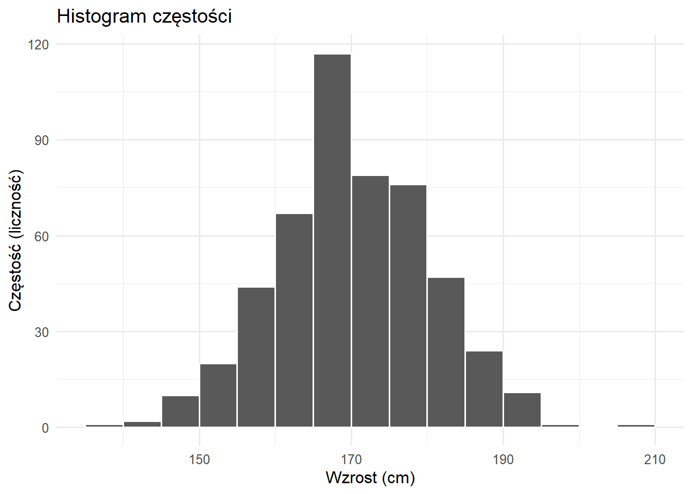
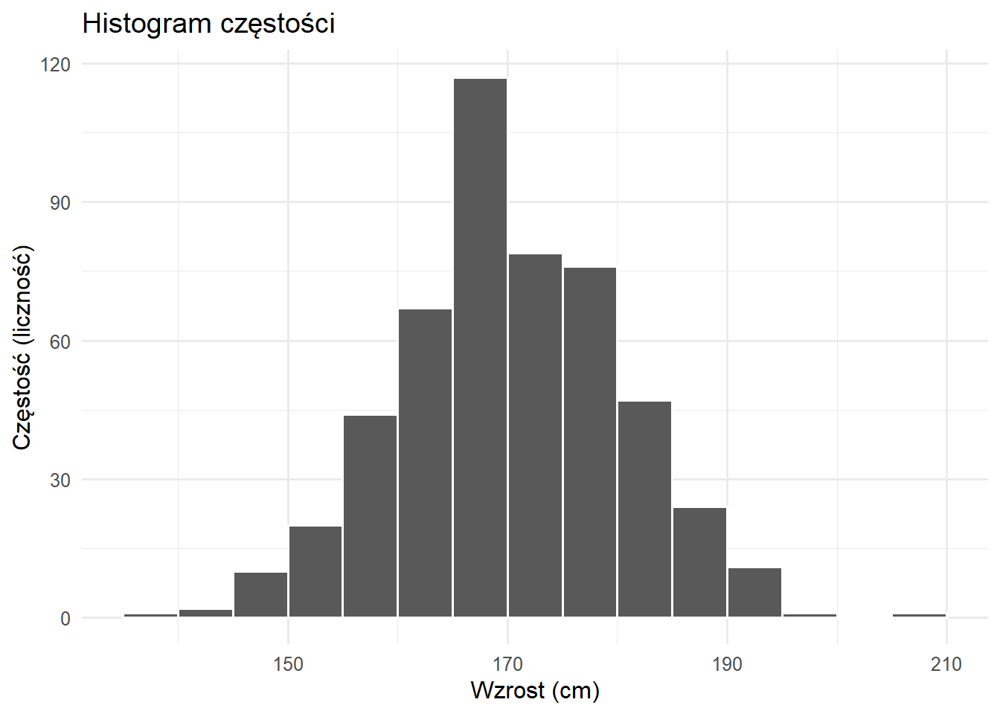
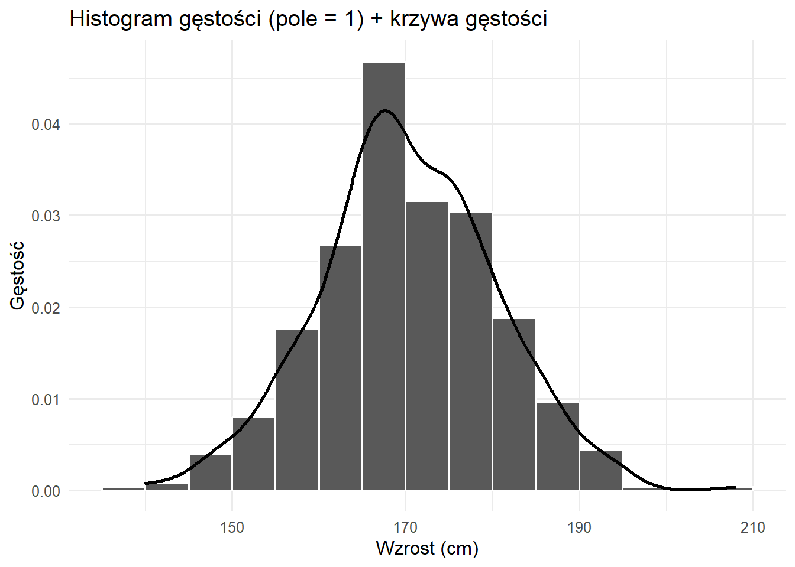

ggplot(heights, aes(x = height)) +
geom_histogram(binwidth = 5, boundary = 0, color = "white") +
labs(title = "Histogram częstości", x = "Wzrost (cm)", y = "Częstość (liczność)")
Statystyka to nauka o uczeniu się z danych w warunkach niepewności.
Statystyka jest sposobem poznawania świata na podstawie danych, gdy wyniki są zmienne i niepewne. Uczy nas, jak mądrze zbierać dane, dostrzegać wzorce, szacować wielkości populacyjne i dokonywać prognoz — zawsze określając, jak bardzo możemy się mylić.
Statystyka i demografia to powiązane ze sobą dyscypliny, które dostarczają potężnych narzędzi do zrozumienia populacji, ich charakterystyk i wzorców wyłaniających się z danych. W erze, w której dane napędzają proces podejmowania decyzji od planowania lokalnej społeczności po globalne inicjatywy polityczne, zrozumienie zasad statystycznych nie jest tylko kwestią akademicką — jest niezbędne dla świadomego obywatelstwa i praktyki zawodowej.
Rozważmy praktyczny przykład: Gdy doniesienia prasowe informują, że „bezrobocie spadło o 2%“, co to naprawdę oznacza? Czy ta zmiana jest znacząca, czy może wynikać z losowej zmienności? Jak to zmierzono? Kto został uwzględniony w badaniu? Te pytania ilustrują, dlaczego umiejętności statystyczne są kluczowe dla interpretacji informacji demograficznych kształtujących nasz świat.
Statystyka służy jako matematyczny szkielet analizy demograficznej, umożliwiając nam wyjście poza prosty opis do zrozumienia złożonej dynamiki populacji, dokonywania prognoz i informowania o decyzjach politycznych. Niezależnie od tego, czy badamy wskaźniki urodzeń w krajach rozwijających się, wzorce migracji w odpowiedzi na zmiany klimatu, czy trendy śmiertelności podczas pandemii, metody statystyczne zapewniają rygoryzmność niezbędną dla znaczących wniosków demograficznych.
Zasada główna: O ile nie podano inaczej, części ułamkowe liczb dziesiętnych zaokrąglaj do co najmniej 2 cyfr znaczących. W statystyce często pracujemy z długimi częściami ułamkowymi i bardzo małymi liczbami — nie zaokrąglaj nadmiernie w krokach pośrednich, zaokrąglaj na końcu obliczeń.
Część ułamkowa to cyfry po przecinku dziesiętnym. W statystyce szczególnie ważne jest zachowanie odpowiedniej precyzji:
Statystyki opisowe:
Bardzo małe liczby (p-wartości, prawdopodobieństwa):
W części ułamkowej cyfry znaczące to wszystkie cyfry oprócz zer wiodących:
W statystyce małe wartości mają krytyczne znaczenie interpretacyjne:
Błędne zaokrąglenie:
Poprawne podejście:
W statystyce często spotykamy bardzo małe liczby. Używaj notacji naukowej gdy ułatwia to odczyt:
P-wartości i prawdopodobieństwa:
Bardzo małe odchylenia standardowe:
Duże liczby (rzadko w podstawowej statystyce):
Wątpliwości: Lepiej zachować dodatkową cyfrę niż zaokrąglić zbyt mocno
Statystyka to nauka o zbieraniu, organizowaniu, analizowaniu, interpretowaniu i prezentowaniu danych. Obejmuje zarówno metody pracy z danymi, jak i teoretyczne podstawy uzasadniające te metody. Ale statystyka to coś więcej niż tylko liczby i wzory — to sposób myślenia o niepewności i zmienności w otaczającym nas świecie.
Wyobraź sobie, że chcesz poznać średni wiek przy pierwszym małżeństwie w swoim kraju. Nie możesz zapytać każdej pojedynczej osoby, kiedy po raz pierwszy wstąpiła w związek małżeński (jeśli w ogóle). Statystyka dostarcza narzędzi do:
Dziedzinę statystyki można ogólnie podzielić na dwie uzupełniające się gałęzie:
Statystyka opisowa obejmuje metody podsumowywania i prezentowania danych w znaczący sposób. Pomyśl o tym jako o opowiadaniu historii twoich danych. Obejmuje to:
Miary tendencji centralnej - Gdzie znajduje się centrum twoich danych?
Miary zmienności - Jak rozrzucone są twoje dane?
Reprezentacje wizualne
Statystyka wnioskowania obejmuje techniki wyciągania wniosków o populacjach na podstawie danych z próby. Ta gałąź pozwala nam wyjść poza to, co obserwujemy, do tego, co możemy rozsądnie wywnioskować.
Na przykład, jeśli badanie 1000 gospodarstw domowych stwierdza, że 23% obejmuje trzy pokolenia mieszkające razem, statystyka wnioskowania pomaga nam:
Fundamentalna zasada: Statystyka nie eliminuje niepewności — pomaga nam ją mierzyć, zarządzać nią i skutecznie komunikować.
Pytanie badawcze: Jaki odsetek studentów popiera utrzymanie biblioteki otwartej 24/7?
Wyzwanie:
Bez myślenia statystycznego: „60 ze 100 studentów powiedziało tak, więc dokładnie 60% popiera.”
Z myśleniem statystycznym: „Szacujemy 60% poparcia z marginesem błędu ±10%. Możemy być rozsądnie pewni, że prawdziwe poparcie mieści się między 50% a 70%.”
Różnica polega na uznaniu i kwantyfikacji niepewności zamiast udawania, że ona nie istnieje.
Literary Digest przeprowadził jeden z największych sondaży w historii z 2,4 miliona odpowiedzi, przewidując, że Alf Landon pokona Franklina D. Roosevelta w wyborach prezydenckich w 1936 roku. Pomimo ogromnej wielkości próby:
Przewidywanie: Landon 57%, Roosevelt 43% Rzeczywisty wynik: Roosevelt 62%, Landon 38% Błąd: 25 punktów procentowych!
Co poszło nie tak? Sondaż cierpiał na systematyczne obciążenie (bias):
Obciążenie selekcyjne w ramce losowania:
Obciążenie braku odpowiedzi:
Kluczowe wnioski:
Ta katastrofa doprowadziła do znacznych ulepszeń w metodologii sondażowej, w tym rozwoju losowania probabilistycznego i śledzenia wskaźników odpowiedzi.
Dzisiejsze sondaże, choć znacznie mniejsze niż 2,4 miliona odpowiedzi Literary Digest, są znacznie dokładniejsze, ponieważ koncentrują się na:
Reprezentatywnym losowaniu: Używanie metod opartych na prawdopodobieństwie, aby zapewnić wszystkim grupom znane szanse selekcji
Wykrywanie i korekcja obciążenia: Monitorowanie wskaźników odpowiedzi w różnych grupach demograficznych i korygowanie znanych obciążeń
Kwantyfikacja niepewności: Raportowanie marginesów błędu, które uczciwie komunikują granice tego, co wiemy
Przykład: Współczesny sondaż 1000 losowo wybranych wyborców z 3% marginesem błędu jest znacznie bardziej wiarygodny niż masywne, ale obciążone badanie Literary Digest.
Rozważ kucharza przygotowującego zupę dla 100 osób, który musi ocenić jej smak bez konsumowania całego garnka:
Populacja: Cały garnek zupy (100 porcji) Próba: Jedna łyżka do spróbowania Parametr populacji: Prawdziwy średni poziom słoności całego garnka (nieznany) Statystyka z próby: Poziom słoności wykryty w łyżce (obserwowalny) Wnioskowanie statystyczne: Używanie charakterystyk łyżki do wyciągania wniosków o całym garnku
1. Losowe próbkowanie jest niezbędne: Kucharz musi dokładnie wymieszać zupę przed pobraniem próbki. Konsekwentne pobieranie próbek z powierzchni może pominąć przyprawy, które osiadły, wprowadzając systematyczne obciążenie.
2. Wielkość próby wpływa na precyzję: Większa łyżka dostarcza bardziej wiarygodnych informacji o ogólnym smaku niż mały łyk, choć praktyczne ograniczenia limitują wielkość próby.
3. Niepewność jest nieodłączna: Nawet przy właściwej technice próbkowania, łyżka może nie reprezentować idealnie charakterystyk całego garnka.
4. Systematyczne obciążenie podważa wnioskowanie: Jeśli ktoś potajemnie doda sól tylko do obszaru próbkowania, wnioski o całym garnku stają się nieważne — ilustrując, jak obciążenie próbkowania zniekształca wnioskowanie statystyczne.
5. Wnioskowanie ma ograniczenia zakresu: Próba może oszacować średnią słoność, ale nie może ujawnić, czy niektóre części są bardziej słone niż inne, podkreślając granice tego, co próby mogą nam powiedzieć o zmienności populacji.
Ta analogia uchwytuje istotę rozumowania statystycznego: używanie starannie wybranych prób do poznawania większych populacji przy jednoczesnym jawnym uznawaniu i kwantyfikacji nieodłącznej niepewności w tym procesie.
| Pojęcie | Definicja | Główne źródło niepewności | Przykład |
|---|---|---|---|
| Próba (Sample) | Podzbiór jednostek populacji faktycznie obserwowanych | Zmienność próbkowania: Różne próby dają różne wyniki | 1000 ankietowanych wyborców z populacji milionów |
| Populacja (Population) | Kompletny zbiór jednostek w konkretnym kontekście/czasie | Zmienność czasowa/kontekstowa: Różne okresy lub warunki tworzą różne charakterystyki populacji | Wszyscy zarejestrowani wyborcy w 2024 vs. 2028 |
| Superpopulacja (DGP) | Podstawowy proces generujący obserwowalne dane | Niepewność modelu: Nasze teoretyczne zrozumienie może być niepełne lub uproszczone | Mechanizm zachowania wyborców pod wpływem nieobserwowanych czynników |
Kompleksowa analiza statystyczna uznaje wiele źródeł niepewności, od zmienności próbkowania po ograniczenia modelu, dostarczając odpowiednio skromnych wniosków o tym, co dane mogą i nie mogą nam powiedzieć.
Zanim zagłębimy się w populacje i próby, musimy zrozumieć typy zmiennych, z którymi pracujemy i jak je mierzymy.
Zmienne ilościowe (Quantitative Variables) reprezentują ilości lub wielkości i mogą być:
Zmienne ciągłe (Continuous Variables): Mogą przyjmować dowolną wartość w przedziale, ograniczoną tylko precyzją pomiaru.
Zmienne dyskretne (Discrete Variables): Mogą przyjmować tylko określone wartości, zazwyczaj liczenia.
Zmienne jakościowe (Qualitative Variables) reprezentują kategorie lub cechy i mogą być:
Zmienne nominalne (Nominal Variables): Kategorie bez naturalnego porządku.
Zmienne porządkowe (Ordinal Variables): Kategorie ze znaczącym porządkiem, ale nierównymi interwałami.
Zrozumienie skal pomiarowych jest kluczowe, ponieważ determinują, które metody statystyczne są odpowiednie:
Skala nominalna (Nominal Scale): Tylko kategorie — możemy liczyć częstości, ale nie możemy porządkować ani wykonywać operacji arytmetycznych. Przykład: Możemy powiedzieć, że 45% mieszkańców urodziło się lokalnie, ale nie możemy obliczyć „średniego miejsca urodzenia”.
Skala porządkowa (Ordinal Scale): Kolejność ma znaczenie, ale różnice między wartościami niekoniecznie są równe. Przykład: Różnica między „złym” a „przeciętnym” zdrowiem może nie równać się różnicy między „dobrym” a „doskonałym” zdrowiem.
Skala interwałowa (Interval Scale): Równe interwały między wartościami, ale brak prawdziwego punktu zerowego. Przykład: Temperatura w stopniach Celsjusza — różnica między 20°C a 30°C równa się różnicy między 30°C a 40°C, ale 0°C nie oznacza „braku temperatury”.
Skala ilorazowa (Ratio Scale): Równe interwały z prawdziwym punktem zerowym, umożliwiające wszystkie operacje matematyczne. Przykład: Dochód — 40 000 zł to dwa razy więcej niż 20 000 zł, a 0 zł oznacza brak dochodu.
Zrozumienie rozróżnienia między populacjami a próbami jest kluczowe dla właściwej analizy statystycznej w demografii. To rozróżnienie wpływa na każdy aspekt naszej analizy, od planowania zbierania danych po interpretację wyników.
Populacja to kompletny zbiór jednostek, obiektów lub pomiarów, o których chcemy wyciągnąć wnioski. Kluczowe słowo to „kompletny” — populacja obejmuje każdego pojedynczego członka grupy, którą badamy.
Przykłady populacji w demografii:
Populacje mogą być:
Skończone (Finite): Mające policzalną liczbę członków (wszyscy obecni obywatele Polski)
Nieskończone (Infinite): Teoretyczne lub niepoliczalnie duże (wszystkie możliwe przyszłe urodzenia)
Stałe (Fixed): Zdefiniowane w określonym punkcie czasu (wszyscy mieszkańcy w dniu spisu)
Dynamiczne (Dynamic): Zmieniające się w czasie (populacja miasta doświadczająca urodzeń, zgonów i migracji codziennie)
Próba to podzbiór populacji, który jest faktycznie obserwowany lub mierzony. Badamy próby, ponieważ badanie całych populacji jest często niemożliwe, niepraktyczne lub niepotrzebne.
Dlaczego używamy prób:
Praktyczna niemożliwość: Wyobraź sobie testowanie każdej osoby w Chinach na obecność choroby. Zanim skończyłbyś testować 1,4 miliarda ludzi, sytuacja chorobowa całkowicie by się zmieniła, a niektórzy ludzie testowani wcześnie wymagaliby ponownego testowania.
Względy kosztowe: Amerykański spis powszechny z 2020 roku kosztował około 15,6 miliarda dolarów. Przeprowadzanie tak kompletnych wyliczeń często byłoby zbyt kosztowne.
Ograniczenia czasowe: Decydenci często potrzebują informacji szybko. Badanie ankietowe 10 000 osób można ukończyć w ciągu tygodni, podczas gdy spis wymaga lat planowania, wykonania i przetwarzania.
Pomiar destrukcyjny: Niektóre pomiary niszczą to, co jest mierzone. Testowanie żywotności żarówek lub punktu załamania materiałów wymaga użycia prób.
Większa dokładność: Co zaskakujące, próby mogą czasem być dokładniejsze niż kompletne wyliczenia. Z próbą można pozwolić sobie na lepsze szkolenie ankieterów, bardziej staranne zbieranie danych i dokładniejsze kontrole jakości.
Przykład próby vs. populacja:
Powiedzmy, że chcemy poznać średnią wielkość gospodarstwa domowego w Warszawie:
Pojęcie superpopulacji rozszerza nasze myślenie poza skończone, obserwowalne populacje do teoretycznych, nieskończonych populacji, z których nasza obserwowana populacja może być uważana za próbę. Ta struktura jest szczególnie potężna w modelowaniu demograficznym.
Zrozumienie superpopulacji przez przykłady:
Wyobraź sobie badanie wskaźników śmiertelności niemowląt w Kenii w 2023 roku. Możemy obserwować 1000 zgonów niemowląt na 50 000 urodzeń. Ale możemy myśleć o tych 50 000 urodzeniach jako o jednej możliwej realizacji z nieskończonej superpopulacji wszystkich możliwych urodzeń, które mogłyby się wydarzyć w tych samych warunkach. Ta perspektywa pomaga nam zrozumieć, że:
Dlaczego superpopulacje mają znaczenie:
Badacze czasami mają dostęp do całych populacji w określonych kontekstach:
Pytanie: Jeśli możemy obliczyć dokładne parametry populacji dla 2024 roku, po co dyskutować o niepewności?
Odpowiedź: Zazwyczaj dążymy do zrozumienia podstawowych procesów, a nie tylko opisywania pojedynczych okresów czasu.
Superpopulacja lub Proces Generowania Danych (DGP - Data Generating Process) reprezentuje konceptualny mechanizm, który produkuje obserwowane dane — ciągły proces, który mógłby generować różne wyniki w nieco zmienionych warunkach.
Zamiast myśleć tylko:
Populacja → PróbaCzęsto konceptualizujemy:
SUPERPOPULACJA (podstawowy proces)
↓
[Mechanizm generowania danych działający w określonych warunkach]
↓
OBSERWOWANA POPULACJA (konkretny rok/kontekst)
↓
[Analiza statystyczna i interpretacja]
↓
WGLĄD w ogólny procesAnaliza zachowań wyborczych
Te pojęcia stanowią rdzeń wnioskowania statystycznego — jak uczymy się o populacjach z prób. Zrozumienie relacji między tymi terminami jest niezbędne dla właściwego rozumowania statystycznego.
Parametr to liczbowa charakterystyka populacji. Parametry są zazwyczaj nieznane, ponieważ nie możemy zmierzyć całej populacji. Są to wartości stałe (nie losowe), ale nieznane nam. Oznaczamy parametry literami greckimi.
Powszechne parametry demograficzne:
Przykład: Prawdziwy średni wiek przy pierwszym porodzie dla wszystkich kobiet we Francji, które urodziły dziecko w 2023 roku, jest parametrem. Nazwijmy go \mu = 31,2 lat. Nie znamy tej wartości bez zmierzenia każdego pojedynczego porodu.
Statystyka to liczbowa charakterystyka obliczona z danych z próby. Statystyki są zmiennymi losowymi — ich wartości różnią się od próby do próby. Używamy łacińskich liter dla statystyk.
Powszechne statystyki z próby:
Przykład: Z próby 500 urodzeń we Francji obliczamy średni wiek przy pierwszym porodzie z próby \bar{x} = 30,9 lat. To jest nasza statystyka. Inna próba może dać \bar{x} = 31,4 lat.
Pomyśl o tej relacji jak o próbie zrozumienia głębokości jeziora:
Estymator to reguła lub formuła do obliczania oszacowania parametru populacji z danych z próby. Estymator to funkcja, która odwzorowuje dane z próby na oszacowania parametrów.
Właściwości dobrych estymatorów:
Nieobciążoność (Unbiasedness): Średnio estymator równa się prawdziwej wartości parametru. Gdybyśmy powtórzyli próbkowanie wiele razy, średnia wszystkich naszych oszacowań równałaby się prawdziwemu parametrowi.
Przykład: Średnia z próby \bar{x} jest nieobciążonym estymatorem średniej populacji \mu. Gdybyśmy wzięli 1000 różnych prób i obliczyli 1000 średnich z prób, ich średnia byłaby bardzo bliska \mu.
Zgodność (Consistency): Gdy wielkość próby wzrasta, estymator zbiega się do prawdziwej wartości parametru.
Przykład: Z n=10, nasze oszacowanie średniego dochodu może być oddalone o 5000 zł. Z n=1000, możemy być oddaleni tylko o 500 zł. Z n=100 000, możemy być oddaleni tylko o 50 zł.
Efektywność (Efficiency): Wśród nieobciążonych estymatorów, ten z najmniejszą wariancją. Średnia z próby jest bardziej efektywna niż mediana z próby do estymowania średniej populacji rozkładu normalnego.
Powszechne estymatory:
Uwaga: Dzielimy przez (n-1), a nie n dla wariancji z próby, aby uczynić ją nieobciążoną — to się nazywa korekcja Bessela.
Estimand to konkretny parametr populacji, który chcemy oszacować. To cel naszej procedury estymacji. Jasna specyfikacja estimandu jest kluczowa dla właściwego wnioskowania statystycznego i unikania błędnej interpretacji.
Przykłady jasno zdefiniowanych estimandów:
Dlaczego precyzyjna definicja estimandu ma znaczenie:
Rozważ badanie „stopy bezrobocia”. Estimand musi określić:
Różne definicje prowadzą do różnych liczb. Amerykańskie Biuro Statystyki Pracy publikuje sześć różnych stóp bezrobocia (U-1 do U-6) na podstawie różnych definicji.
Oszacowanie to konkretna wartość numeryczna obliczona przez zastosowanie estymatora do obserwowanych danych. To nasze najlepsze przypuszczenie o prawdziwej wartości parametru na podstawie dostępnych informacji.
Przykład kompletnego procesu:
Estimand to konkretna wielkość, którą chcemy oszacować — na co celujemy naszą analizą statystyczną. Choć często jest to parametr populacji, estimandy mogą być bardziej złożone.
Przykłady różnych estimandów:
Prosty estimand parametru: Średni dochód populacji (\mu) Porównawczy estimand: Różnica w średnim dochodzie między dwiema grupami (\mu_1 - \mu_2) Przyczynowy estimand: Średni efekt leczenia programu szkoleniowego na zarobki Warunkowy estimand: Oczekiwana frekwencja wyborcza przy konkretnych warunkach pogodowych
Zrozumienie wnioskowania statystycznego wymaga rozróżnienia między tymi powiązanymi, ale odrębnymi pojęciami:
Przykład w kontekście:
Ta struktura pomaga wyjaśnić dokładnie, na jakie pytanie odpowiadamy i zapewnia, że nasze metody są zgodne z naszymi celami badawczymi.
Żaden pomiar ani oszacowanie nie jest doskonałe. Zrozumienie różnych typów błędów jest kluczowe dla interpretacji wyników i poprawy projektu badania.
Nieprzewidywalne „górki i dołki” wynikające z przypadku (np. którymi osobami losowo dysponujemy, szum dnia codziennego).
Trwałe „przesunięcie” wyniku od prawdy, spowodowane projektem badania lub pomiarem.
Kluczowa myśl: Duża, ale obciążona (biased) próba daje dokładnie błędny wynik. Zwiększaj n, aby zmniejszyć błąd losowy; poprawiaj projekt/pomiar, aby zmniejszyć bias.
Dla estymatora \hat\theta:
\mathrm{MSE}(\hat\theta) \;=\; \underbrace{\mathrm{Var}(\hat\theta)}_{\text{błąd losowy}} \;+\; \underbrace{\big(\mathrm{Bias}(\hat\theta)\big)^2}_{\text{błąd systematyczny}}.
Błąd losowy (zwany także błędem próbkowania) powstaje z naturalnej zmienności w próbkowaniu. To błąd, który występuje, ponieważ obserwujemy próbę, a nie całą populację.
Charakterystyki błędu losowego:
Przykład błędu losowego:
Wyobraź sobie szacowanie proporcji gospodarstw domowych z dostępem do internetu poprzez ankietowanie 100 losowych gospodarstw:
Zmienność wokół 70% to błąd losowy. Przy większych próbach (powiedzmy 1000 gospodarstw), oszacowania byłyby bardziej skupione wokół 70%.
Kwantyfikacja błędu losowego:
Dla proporcji, błąd standardowy (który mierzy błąd losowy) wynosi: SE = \sqrt{\frac{p(1-p)}{n}}
Jeśli prawdziwa proporcja p = 0,7 i n = 100: SE = \sqrt{\frac{0,7 \times 0,3}{100}} = 0,046
To oznacza, że nasze oszacowanie typowo różni się o około \pm 4,6 punktu procentowego tylko z powodu błędu losowego.
Błąd systematyczny (zwany także obciążeniem - bias) reprezentuje konsekwentne odchylenie od prawdziwych wartości w konkretnym kierunku. W przeciwieństwie do błędu losowego, nie uśrednia się przy powtarzanym próbkowaniu.
Źródła błędu systematycznego:
Obciążenie selekcyjne (Selection Bias): Gdy metoda próbkowania systematycznie wyklucza pewne grupy.
Przykład: Badanie telefoniczne dotyczące zatrudnienia przeprowadzone tylko w godzinach pracy nie będzie reprezentować osób zatrudnionych, zawyżając oszacowania bezrobocia.
Obciążenie pomiarowe (Measurement Bias): Gdy instrument pomiarowy konsekwentnie przeszacowuje lub niedoszacowuje.
Przykład: Pytanie „Ile miałeś lat przy pierwszym małżeństwie?” może dać inne wyniki niż „W którym roku po raz pierwszy wstąpiłeś w związek małżeński?” ze względu na różnice w przypominaniu.
Obciążenie odpowiedzi (Response Bias): Gdy respondenci systematycznie błędnie raportują.
Przykład: Ludzie mają tendencję do zaniżania konsumpcji alkoholu i zawyżania zachowań wyborczych. Dochód jest często zaniżany na wysokich poziomach i zawyżany na niskich poziomach.
Obciążenie braku odpowiedzi (Non-response Bias): Gdy ci, którzy nie odpowiadają, różnią się systematycznie od tych, którzy odpowiadają.
Przykład: W badaniach zdrowotnych bardzo chorzy i bardzo zdrowi ludzie są mniej skłonni do odpowiedzi, co przesuwa oszacowania zdrowia ku środkowi.
Obciążenie przetrwania (Survivorship Bias): Gdy obserwujemy tylko „ocalałych” jakiegoś procesu.
Przykład: Badanie czynników związanych z długowiecznością poprzez wywiadowanie 90-latków pomija tych z tymi samymi czynnikami, którzy zmarli młodsi.
Przykład porównujący błąd losowy i systematyczny:
Waga, która zawsze pokazuje 1 kg za dużo, ma błąd systematyczny. Jeśli ważysz się 100 razy:
Radzenie sobie z różnymi typami błędów:
Próbkowanie to proces wyboru podzbioru jednostek z populacji w celu oszacowania charakterystyk całej populacji. Sposób, w jaki próbkujemy, głęboko wpływa na to, co możemy wywnioskować z naszych danych.
Zanim omówimy metody, musimy zrozumieć operant losowania — listę lub urządzenie, z którego pobieramy naszą próbę. Operant powinien idealnie obejmować każdego członka populacji dokładnie raz.
Powszechne operanty losowania:
Problemy z operantami:
Próbkowanie probabilistyczne daje każdemu członkowi populacji znane, niezerowe prawdopodobieństwo selekcji. To pozwala nam dokonywać wnioskowań statystycznych o populacji.
Każda możliwa próba o wielkości n ma równe prawdopodobieństwo selekcji. To złoty standard teorii statystycznej, ale często niepraktyczny dla dużych populacji.
Jak to działa:
Przykład: Aby wybrać próbę 50 uczniów ze szkoły liczącej 1000:
Zalety:
Wady:
Wybierz co k-ty element z uporządkowanego operanta losowania, gdzie k = N/n (interwał próbkowania).
Jak to działa:
Przykład: Aby wybrać próbę 100 domów z 5000 na liście ulic:
Zalety:
Wady:
Przykład ukrytej okresowości: Próbkowanie co 10. mieszkania w budynkach, gdzie mieszkania narożne (numery kończące się na 0) są wszystkie większe. To zawyżyłoby nasze oszacowanie średniej wielkości mieszkania.
Podziel populację na jednorodne podgrupy (warstwy) przed próbkowaniem. Próbkuj niezależnie w każdej warstwie.
Jak to działa:
Przykład: Badanie dochodu w mieście z odrębnymi dzielnicami:
Typy alokacji:
Proporcjonalna: Wielkość próby w każdej warstwie proporcjonalna do wielkości warstwy
Optymalna (Neymana): Większe próby z bardziej zmiennych warstw
Równa: Ta sama wielkość próby na warstwę niezależnie od wielkości populacji
Zalety:
Wady:
Wybierz grupy (klastry) zamiast jednostek. Często używane, gdy populacja jest naturalnie pogrupowana lub gdy utworzenie kompletnego operanta jest trudne.
Jednostopniowe losowanie grupowe:
Dwustopniowe losowanie grupowe:
Przykład: Badanie gospodarstw wiejskich w dużym kraju:
Przykład wielostopniowy: Krajowe badanie zdrowotne:
Zalety:
Wady:
Efekt projektu (Design Effect): Losowanie grupowe zazwyczaj wymaga większych prób niż SRS. Efekt projektu (DEFF) kwantyfikuje to:
\text{DEFF} = \frac{\text{Wariancja(próba grupowa)}}{\text{Wariancja(SRS)}}
Jeśli DEFF = 2, potrzebujesz dwukrotnie większej próby, aby osiągnąć taką samą precyzję jak SRS.
Próbkowanie nieprobabilistyczne nie gwarantuje znanych prawdopodobieństw selekcji. Choć ogranicza wnioskowanie statystyczne, te metody mogą być konieczne lub przydatne w pewnych sytuacjach.
Selekcja oparta wyłącznie na łatwości dostępu. Brak próby reprezentacji.
Przykłady:
Kiedy może być akceptowalne:
Główne problemy:
Prawdziwy przykład: Sondaż prezydencki Literary Digest z 1936 roku ankietował 2,4 miliona osób (ogromna próba!), ale używał książek telefonicznych i członkostwa w klubach jako operantów podczas Wielkiego Kryzysu, dramatycznie nadreprezentując bogatych wyborców i niepoprawnie przewidując, że Landon pokona Roosevelta.
Celowy wybór konkretnych przypadków oparty na osądzie badacza o tym, co jest „typowe” lub „interesujące”.
Przykłady:
Typy próbkowania celowego:
Typowy przypadek: Wybierz przeciętne lub normalne przykłady
Skrajny/dewiacyjny przypadek: Wybierz niezwykłe przykłady
Maksymalna zmienność: Celowo wybierz różnorodne przypadki
Przypadek krytyczny: Wybierz przypadki, które będą definitywne
Kiedy jest przydatne:
Problemy:
Selekcja w celu dopasowania proporcji populacji w kluczowych charakterystykach. Jak losowanie warstwowe, ale bez losowej selekcji w grupach.
Jak działa próbkowanie kwotowe:
Szczegółowy przykład: Sondaż polityczny z kwotami:
Proporcje populacji:
Dla próby 1000:
Ankieterzy mogą stać na rogach ulic, podchodząc do osób, które wydają się pasować do potrzebnych kategorii, aż kwoty zostaną wypełnione.
Dlaczego jest popularne w badaniach rynkowych:
Dlaczego jest problematyczne dla wnioskowania statystycznego:
Ukryte obciążenie selekcyjne: Ankieterzy podchodzą do osób, które wyglądają na przystępne, dobrze mówią językiem, nie spieszą się — systematycznie wykluczając pewne typy w każdej komórce kwotowej.
Przykład obciążenia: Ankieter wypełniający kwotę dla „kobiet 18-34” może podchodzić do kobiet w centrum handlowym we wtorek po południu, systematycznie pomijając:
Mimo że końcowa próba ma „właściwą” proporcję młodych kobiet, nie są one reprezentatywne dla wszystkich młodych kobiet.
Brak miary błędu próbkowania: Bez prawdopodobieństw selekcji nie możemy obliczyć błędów standardowych ani przedziałów ufności.
Historyczna przestroga: Próbkowanie kwotowe było standardem w sondażach do wyborów prezydenckich w USA w 1948 roku, gdy sondaże używające próbkowania kwotowego niepoprawnie przewidziały, że Dewey pokona Trumana. Niepowodzenie doprowadziło do przyjęcia próbkowania probabilistycznego w sondażach.
Uczestnicy rekrutują dodatkowych uczestników ze swoich znajomych. Próba rośnie jak tocząca się kula śnieżna.
Jak to działa:
Przykład: Badanie nieudokumentowanych imigrantów:
Kiedy jest wartościowe:
Ukryte populacje: Grupy bez operantów losowania
Populacje połączone społecznie: Gdy relacje mają znaczenie
Badania zależne od zaufania: Gdy polecenia zwiększają uczestnictwo
Główne ograniczenia:
Zaawansowana wersja — Próbkowanie sterowane przez respondentów (Respondent-Driven Sampling - RDS):
Próbuje uczynić próbkowanie kuli śnieżnej bardziej rygorystycznym poprzez:
Nadal kontrowersyjne, czy RDS naprawdę pozwala na ważne wnioskowanie.
Gdy dokonujemy oszacowań z prób, musimy określić ilościowo, jak niepewne są te oszacowania. Te miary są fundamentalne dla uczciwego raportowania wyników.
Błąd standardowy (SE) kwantyfikuje zmienność statystyki w różnych możliwych próbach. Pomyśl o tym jako o mierzeniu, jak bardzo nasze oszacowanie by się wahało, gdybyśmy powtórzyli nasze badanie wiele razy.
Zrozumienie błędu standardowego przez symulację:
Wyobraź sobie, że chcemy oszacować średni wzrost w populacji, gdzie \mu = 170 cm i \sigma = 10 cm.
Gdybyśmy wzięli 1000 różnych prób po n = 100 osób:
Odchylenie standardowe tych 1000 średnich z prób wynosiłoby około 1 cm. To jest błąd standardowy.
Formuły dla powszechnych błędów standardowych:
Dla średniej: SE(\bar{x}) = \frac{\sigma}{\sqrt{n}}
Dla proporcji: SE(\hat{p}) = \sqrt{\frac{p(1-p)}{n}}
Dla różnicy między dwiema średnimi: SE(\bar{x}_1 - \bar{x}_2) = \sqrt{\frac{\sigma_1^2}{n_1} + \frac{\sigma_2^2}{n_2}}
Ważne właściwości:
Błąd standardowy vs. Odchylenie standardowe:
Studenci często mylą te pojęcia:
Przykład z wynikami egzaminów:
Margines błędu reprezentuje maksymalną oczekiwaną różnicę między oszacowaniem z próby a prawdziwym parametrem populacji przy określonym poziomie ufności. To jest to, co widzisz raportowane w sondażach: „Poparcie wynosi 52% z marginesem błędu ±3%.”
Obliczanie marginesu błędu:
\text{MOE} = \text{Wartość krytyczna} \times \text{Błąd standardowy}
Dla 95% ufności z aproksymacją normalną: \text{MOE} = 1,96 \times SE
Dla 99% ufności: \text{MOE} = 2,576 \times SE
Przykład z sondażem politycznym:
Badanie 1000 wyborców stwierdza, że 52% popiera kandydata.
Co margines błędu nam mówi i czego nie mówi:
Mówi nam:
Nie mówi nam:
Obciążona próba z małym marginesem błędu jest precyzyjnie błędna!
Czynniki wpływające na margines błędu:
Powszechne błędne interpretacje:
Przedział ufności dostarcza zakres prawdopodobnych wartości dla parametru populacji. Jest bardziej informatywny niż samo oszacowanie punktowe.
Konstrukcja:
\text{CI} = \text{Oszacowanie} \pm (\text{Wartość krytyczna} \times \text{Błąd standardowy})
Dla 95% CI średniej: \text{CI} = \bar{x} \pm 1,96 \times \frac{\sigma}{\sqrt{n}}
Szczegółowy przykład:
Szacowanie średniej wielkości gospodarstwa domowego z próby:
Interpretacja: „Jesteśmy 95% pewni, że średnia wielkość gospodarstwa domowego w populacji wynosi między 2,31 a 2,55 osoby.”
Co oznacza poziom ufności:
95% poziom ufności oznacza, że gdybyśmy powtórzyli naszą procedurę próbkowania 100 razy:
Powszechne poziomy ufności:
Czynniki wpływające na szerokość CI:
Przedziały ufności dla różnych parametrów:
Proporcja: \hat{p} \pm z\sqrt{\frac{\hat{p}(1-\hat{p})}{n}}
Przykład: 230 z 1000 dorosłych pali
Różnica między proporcjami: (\hat{p}_1 - \hat{p}_2) \pm z\sqrt{\frac{\hat{p}_1(1-\hat{p}_1)}{n_1} + \frac{\hat{p}_2(1-\hat{p}_2)}{n_2}}
Powszechne błędne interpretacje:
❌ „Jest 95% prawdopodobieństwo, że parametr jest w tym przedziale” ✓ „95% przedziałów konstruowanych w ten sposób zawiera parametr”
❌ „95% danych mieści się w tym przedziale” ✓ „Ten przedział reprezentuje prawdopodobne wartości dla średniej populacji”
❌ „Jesteśmy 95% pewni, że prawdziwa wartość równa się środkowi przedziału” ✓ „Wartości blisko środka są bardziej prawdopodobne niż wartości blisko krawędzi”
Dane: Informacje zebrane podczas badania – obejmują odpowiedzi z ankiet, wyniki eksperymentów, wskaźniki ekonomiczne, treści z mediów społecznościowych lub wszelkie inne mierzalne obserwacje.
Zrozumienie typów danych i rozkładów jest fundamentalne dla wyboru odpowiednich analiz i poprawnej interpretacji wyników.
Obserwacje zebrane w jednym punkcie czasowym dla wielu podmiotów:
| Osoba | Wiek | Dochód | Wykształcenie |
|---|---|---|---|
| 1 | 25 | 5000 | Licencjat |
| 2 | 35 | 7500 | Magister |
| 3 | 45 | 9000 | Doktorat |
Obserwacje jednego podmiotu w kolejnych punktach czasowych:
| Rok | PKB (w mld) | Stopa Bezrobocia |
|---|---|---|
| 2018 | 20.580 | 3,9% |
| 2019 | 21.433 | 3,7% |
| 2020 | 20.933 | 8,1% |
Obserwacje wielu podmiotów w czasie:
| Kraj | Rok | PKB per capita | Długość życia |
|---|---|---|---|
| Polska | 2018 | 32.794 | 76,7 |
| Polska | 2019 | 35.118 | 76,8 |
| Niemcy | 2018 | 46.194 | 81,9 |
| Niemcy | 2019 | 46.194 | 82,0 |
Szczególny przypadek danych panelowych gdzie:
Każdy wiersz to podmiot; kolumny to zmienne/punkty czasowe:
| Kraj | PKB_2018 | PKB_2019 | DŻ_2018 | DŻ_2019 |
|---|---|---|---|---|
| Polska | 32.794 | 35.118 | 76,7 | 76,8 |
| Niemcy | 46.194 | 46.194 | 81,9 | 82,0 |
Każdy wiersz to unikalna kombinacja podmiot-czas-zmienna:
| Kraj | Rok | Zmienna | Wartość |
|---|---|---|---|
| Polska | 2018 | PKB per capita | 32.794 |
| Polska | 2019 | PKB per capita | 35.118 |
| Polska | 2018 | Długość życia | 76,7 |
| Polska | 2019 | Długość życia | 76,8 |
| Niemcy | 2018 | PKB per capita | 46.194 |
| Niemcy | 2019 | PKB per capita | 46.194 |
| Niemcy | 2018 | Długość życia | 81,9 |
| Niemcy | 2019 | Długość życia | 82,0 |
Uwaga: Format długi jest zazwyczaj preferowany do:
Dane składają się z zebranych obserwacji lub pomiarów. Typ danych określa, jakie operacje są znaczące i jakie metody statystyczne mają zastosowanie.
Dane ciągłe mogą przyjmować dowolną wartość w przedziale:
Przykłady o znaczeniu demograficznym:
Właściwości:
Dane dyskretne mogą przyjmować tylko określone wartości:
Przykłady:
Kluczowe rozróżnienie: Dane dyskretne pochodzą z liczenia; ciągłe z mierzenia.
Dane nominalne reprezentują kategorie bez naturalnego porządku:
Przykłady:
Co możemy zrobić:
Czego nie możemy zrobić:
Dane porządkowe reprezentują uporządkowane kategorie:
Przykłady:
Wyzwanie: Interwały między kategoriami niekoniecznie są równe. „Odległość” od Złego do Przeciętnego zdrowia może nie równać się odległości od Dobrego do Doskonałego.
Rozkład danych opisuje, jak wartości rozkładają się na możliwe wyniki. Rozkłady mówią nam, jakie wartości są powszechne, jakie wartości są rzadkie i jakie wzorce istnieją w naszych danych.
Charakterystyki kształtu:
Symetria vs. Skośność:
Przykład wpływu skośności:
Rozkład dochodu w USA:
Modalność:
Ważne rozkłady prawdopodobieństwa:
Rozkład normalny (Gaussa):
Zastosowania demograficzne:
Rozkład dwumianowy:
Przykład: Liczba urodzeń chłopców na 100 urodzeń (p \approx 0,512)
Rozkład Poissona:
Zastosowania demograficzne:
Rozkład wykładniczy:
Przykład: Czas między urodzeniami w szpitalu
Rozkład częstości pokazuje, jak często każda wartość występuje w zbiorze danych. To często pierwszy krok w zrozumieniu twoich danych.
Częstość bezwzględna: Liczba obserwacji dla każdej wartości.
Częstość względna: Proporcja w każdej kategorii. \text{Częstość względna} = \frac{\text{Liczba}}{\text{Suma}}
Częstość skumulowana: Suma bieżąca do każdej wartości.
Szczegółowy przykład: Rozkład wieku w badaniu zdrowotnym społeczności 200 osób:
| Grupa wiekowa | Częstość bezwzględna | Częstość względna | Częstość skumulowana | Skumulowana % |
|---|---|---|---|---|
| 0-9 | 24 | 0,12 | 24 | 12% |
| 10-19 | 28 | 0,14 | 52 | 26% |
| 20-29 | 35 | 0,175 | 87 | 43,5% |
| 30-39 | 32 | 0,16 | 119 | 59,5% |
| 40-49 | 30 | 0,15 | 149 | 74,5% |
| 50-59 | 25 | 0,125 | 174 | 87% |
| 60-69 | 16 | 0,08 | 190 | 95% |
| 70+ | 10 | 0,05 | 200 | 100% |
Co to nam mówi:
Histogram: Dla danych ciągłych, pokazuje częstość wysokościami słupków.
Wykres słupkowy: Dla danych kategorycznych, pokazuje częstość z oddzielonymi słupkami.
Wielobok częstości: Wykres liniowy łączący środki słupków histogramu.
Dystrybuanta (CDF): Pokazuje proporcję wartości ≤ każdego punktu.
Przykład zastosowania — Zrozumienie wzorców migracji:
Rozkład częstości wieku przy migracji:
Ten wzorzec natychmiast sugeruje trzy odrębne motywacje migracji warte osobnego badania.
Świetnie — poniżej masz gotowy callout po polsku do wklejenia w Quarto (.qmd). Używa zapisu matematycznego z $$ … $$ oraz prostych wizualizacji w R.
Pomysł: Histogram dzieli oś (x) na przedziały (bin-y).
- Częstość (frequency) = ile obserwacji wpada do danego przedziału (to po prostu liczność).
- Gęstość (density) skaluje te licznosci tak, aby łączna powierzchnia słupków była równa 1. Dzięki temu powierzchnia ≈ prawdopodobieństwo.
Dla przedziału o szerokości (h), zawierającego () obserwacji z próby o liczebności (n):
\textbf{wysokość gęstości w tym przedziale} \;\approx\; \frac{\text{count}}{n \cdot h}
Jeśli pomnożysz tę wysokość przez szerokość (h), dostajesz powierzchnię słupka: \text{powierzchnia} \;=\; \frac{\text{count}}{n \cdot h}\times h \;=\; \frac{\text{count}}{n} \;=\; \textbf{częstość względna (prawdopodobieństwo) w tym przedziale.}
Suma powierzchni wszystkich słupków wynosi 1.
Analogia dla danych dyskretnych:
Jeśli dane są dyskretne i użyjesz przedziałów o szerokości 1 ( (h=1) ) skupionych na wartościach dyskretnych, to
\text{wysokość gęstości} \;=\; \frac{\text{count}}{n \cdot 1} \;=\; \frac{\text{count}}{n},
czyli wysokość gęstości = częstość względna. Dla innych szerokości (h) gęstość to częstość względna „na jednostkę” zmiennej.
Analogia dla danych ciągłych:
Dla zmiennych ciągłych prawdopodobieństwo dokładnie jednej wartości wynosi 0 — interesują nas przedziały. Wysokość słupka histogramu odczytujemy jako prawdopodobieństwo na jednostkę (x), aby wysokość × szerokość ≈ prawdopodobieństwo. Jednostki gęstości mają wtedy formę „na cm”, „na kg” itp.
ggplot(heights, aes(x = height)) +
geom_histogram(binwidth = 5, boundary = 0, color = "white") +
labs(title = "Histogram częstości", x = "Wzrost (cm)", y = "Częstość (liczność)")
ggplot(heights, aes(x = height)) +
geom_histogram(aes(y = after_stat(density)), binwidth = 5, boundary = 0, color = "white") +
geom_density(linewidth = 1) +
labs(title = "Histogram gęstości (pole = 1) + krzywa gęstości",
x = "Wzrost (cm)", y = "Gęstość")
bw <- 5
brks <- seq(floor(min(heights$height)/bw)*bw,
ceiling(max(heights$height)/bw)*bw,
by = bw)
tab <- heights %>%
mutate(bin = cut(height, breaks = brks, right = FALSE, include.lowest = TRUE)) %>%
count(bin, name = "count") %>%
mutate(width = bw,
n_total = nrow(heights),
rel_freq = count / n_total, # częstość względna
density_height = rel_freq / width, # count / (n * h)
area = density_height * width) %>% # ≈ częstość względna
arrange(bin)
head(tab, 5)# A tibble: 5 × 7
bin count width n_total rel_freq density_height area
<fct> <int> <dbl> <int> <dbl> <dbl> <dbl>
1 [135,140) 1 5 500 0.002 0.0004 0.002
2 [140,145) 2 5 500 0.004 0.0008 0.004
3 [145,150) 10 5 500 0.02 0.004 0.02
4 [150,155) 20 5 500 0.04 0.008 0.04
5 [155,160) 44 5 500 0.088 0.0176 0.088sum(tab$area) # ≈ 1 (w granicach zaokrągleń)[1] 1Choć to przede wszystkim kurs statystyki, zrozumienie podstawowego prawdopodobieństwa jest niezbędne dla wnioskowania statystycznego.
Prawdopodobieństwo kwantyfikuje niepewność na skali od 0 (niemożliwe) do 1 (pewne).
Prawdopodobieństwo klasyczne: P(\text{zdarzenie}) = \frac{\text{Liczba korzystnych wyników}}{\text{Całkowita liczba możliwych wyników}}
Przykład: Prawdopodobieństwo, że losowo wybrana osoba jest kobietą \approx 0,5
Prawdopodobieństwo empiryczne: Oparte na obserwowanych częstościach
Przykład: W wiosce 423 z 1000 mieszkańców to kobiety, więc P(\text{kobieta}) \approx 0,423
Prawdopodobieństwo warunkowe to prawdopodobieństwo zdarzenia A, przy założeniu że zdarzenie B wystąpiło: P(A|B)
Przykład demograficzny: Prawdopodobieństwo śmierci w ciągu roku przy danym wieku:
Te prawdopodobieństwa warunkowe stanowią podstawę tablic trwania życia.
Zdarzenia A i B są niezależne, jeśli P(A|B) = P(A).
Testowanie niezależności w danych demograficznych:
Czy wykształcenie i płodność są niezależne?
Gdy wielkość próby wzrasta, statystyki z próby zbiegają się do parametrów populacji.
Demonstracja: Szacowanie proporcji płci przy urodzeniu:
Zobaczmy to w działaniu na przykładzie rzutów monetą. Uczciwa moneta ma 50% szansy na wypadnięcie orła, ale poszczególne rzuty są nieprzewidywalne.
# Symulacja rzutów monetą i pokazanie zbieżności
set.seed(42)
n_flips <- 1000
flips <- rbinom(n_flips, 1, 0.5) # 1 = orzeł, 0 = reszka
# Obliczanie skumulowanej proporcji orłów
cumulative_prop <- cumsum(flips) / seq_along(flips)
# Utworzenie ramki danych do wizualizacji
lln_data <- data.frame(
flip_number = 1:n_flips,
cumulative_proportion = cumulative_prop
)
# Wykres zbieżności
ggplot(lln_data, aes(x = flip_number, y = cumulative_proportion)) +
geom_line(color = "steelblue", alpha = 0.7) +
geom_hline(yintercept = 0.5, color = "red", linetype = "dashed", size = 1) +
geom_hline(yintercept = c(0.45, 0.55), color = "red", linetype = "dotted", alpha = 0.7) +
labs(
title = "Prawo wielkich liczb: Proporcje rzutów monetą zbiegają do 0,5",
x = "Liczba rzutów monetą",
y = "Skumulowana proporcja orłów",
caption = "Czerwona linia przerywana = prawdziwe prawdopodobieństwo (0,5)\nLinie kropkowane = zakres ±5%"
) +
scale_y_continuous(limits = c(0.3, 0.7), breaks = seq(0.3, 0.7, 0.1)) +
theme_minimal()
Co to pokazuje:
Niech A oznacza zdarzenie nas interesujące (np. „orzeł w rzucie monetą”, „głos na partię X”, „suma kostek równa 7”). Jeśli P(A) = p i obserwujemy n niezależnych prób z tym samym rozkładem (i.i.d.), to częstość próbkowa zdarzenia A:
\hat{p}_n = \frac{\text{liczba wystąpień zdarzenia } A}{n}
zbiega do p gdy n rośnie.
Przykład z kostkami: Zdarzenie „suma = 7” przy dwóch kostkach ma prawdopodobieństwo 6/36 ≈ 16,7\%, podczas gdy „suma = 4” ma 3/36 ≈ 8,3\%. Przy wielu rzutach suma 7 pojawia się około dwa razy częściej niż suma 4.
Sondaże wyborcze: Jeśli poparcie populacyjne dla partii wynosi p, to przy losowym doborze próby o wielkości n obserwowana częstość \hat{p}_n będzie zbliżać się do p w miarę wzrostu n (zakładając losowy dobór i niezależność prób).
Kontrola jakości: Jeśli 2% produktów jest wadliwych, to w dużych partiach około 2% zostanie uznanych za wadliwe (zakładając niezależną produkcję).
Wniosek: Losowość stanowi podstawę wnioskowania statystycznego, przekształcając niepewność poszczególnych wyników w przewidywalne rozkłady dla estymatorów. Prawo wielkich liczb gwarantuje, że „szum” poszczególnych wyników się uśrednia, pozwalając nam:
Ta zasada działa w sondażach, eksperymentach, a nawet w zjawiskach kwantowych (w interpretacji częstościowej).
W statystyce losowość to uporządkowany sposób opisu niepewności: pojedyncze wyniki są nieprzewidywalne, natomiast w długiej serii powtórzeń ujawniają się stabilne prawidłowości (np. częstości, średnie).
Dwie perspektywy
Losowość epistemiczna a ontologiczna
Epistemiczna (związana z niewiedzą): wynik traktujemy jako losowy, ponieważ nie obserwujemy wszystkich determinant lub nie kontrolujemy warunków.
Przykłady:
Ontologiczna (wrodzona przypadkowość zjawiska): nawet pełna wiedza nie usuwa niepewności wyniku.
Przykłady:
Losowe próbkowanie
Losowy przydział (eksperymenty)
Załóżmy, że losujemy próbę prostą o liczebności n=1000 wyborców i obserwujemy \hat p = 0{,}55 (tj. 55% poparcia). Wówczas:
Naszą najlepszą, jednowartościową oceną odsetka w populacji p jest \hat p = 0{,}55.
Orientacyjny „95\% zakres wartości plauzybilnych” wokół \hat p można przybliżyć wzorem \hat p \,\pm\, 2\sqrt{\frac{\hat p(1-\hat p)}{n}} \;=\; 0{,}55 \,\pm\, 2\sqrt{\frac{0{,}55\cdot 0{,}45}{1000}} \approx 0{,}55 \pm 0{,}031, czyli w przybliżeniu 52\%\text{–}58\% (około \pm 3{,}1 punktu procentowego, pp).
Szerokość tego zakresu maleje wraz z liczebnością próby: \text{szerokość} \;\propto\; \frac{1}{\sqrt{n}}. Przykładowo, zwiększenie n z 1000 do 4000 mniej więcej zmniejsza błąd o połowę.
Nie wszystkie rodzaje niepewności są takie same. Zrozumienie różnych źródeł nieprzewidywalności pomaga w wyborze odpowiednich metod statystycznych i prawidłowej interpretacji wyników.
| Pojęcie | Czym jest? | Źródło nieprzewidywalności | Przykład |
|---|---|---|---|
| Losowość (randomness) | Poszczególne wyniki są niepewne, ale rozkład prawdopodobieństwa jest znany lub modelowany. | Fluktuacje między realizacjami; brak informacji o konkretnym wyniku. | Rzut kostką, rzut monetą, próba sondażowa |
| Chaos | Dynamika deterministyczna bardzo wrażliwa na warunki początkowe (efekt motyla). | Niewielkie różnice początkowe szybko narastają → duże rozbieżności trajektorii. | Prognoza pogody, podwójne wahadło, dynamika populacyjna |
| Entropia | Miara niepewności/rozproszenia (teorioinformacyjna lub termodynamiczna). | Większa gdy wyniki są bardziej równomiernie rozłożone (mniej informacji predykcyjnej). | Entropia Shannona w kompresji danych |
| „Przypadkowość” (potoczne) | Odczuwany brak porządku bez wyraźnego modelu; mieszanka mechanizmów. | Brak uporządkowanego opisu lub stabilnych reguł; nakładające się procesy. | Wzorce ruchu, trendy w mediach społecznościowych |
| Losowość kwantowa (quantum randomness) | Pojedynczy wynik nie jest zdeterminowany; tylko rozkład jest określony (reguła Borna). | Fundamentalna (ontologiczna) nieokreśloność poszczególnych pomiarów. | Pomiar spinu elektronu, polaryzacja fotonu |
Chaos deterministyczny ≠ losowość statystyczna: System chaotyczny jest w pełni deterministyczny, ale praktycznie nieprzewidywalny z powodu ekstremalnej wrażliwości na warunki początkowe. Losowość statystyczna modeluje natomiast niepewność poprzez rozkłady prawdopodobieństwa, gdzie poszczególne wyniki są rzeczywiście niepewne.
Dlaczego to ważne: W statystyce zazwyczaj modelujemy zjawiska jako procesy losowe, zakładając, że możemy określić rozkłady prawdopodobieństwa, nawet gdy poszczególne wyniki są nieprzewidywalne. To założenie stanowi podstawę większości wnioskowań statystycznych.
W interpretacji kopenhaskiej losowość jest fundamentalna (ontologiczna): pojedynczy wynik nie może być przewidziany, ale rozkład prawdopodobieństwa jest dany przez regułę Borna.
To reprezentuje prawdziwą losowość na najbardziej podstawowym poziomie natury, nie tylko naszą ignorancję czynników determinujących.
Rozkład średnich z prób zbliża się do rozkładu normalnego, gdy wielkość próby wzrasta, niezależnie od rozkładu populacji.
Dlaczego to ma znaczenie: Nawet jeśli dochód jest bardzo skośny, średni dochód z prób 100+ osób podąża za przybliżonym rozkładem normalnym, pozwalając nam używać przedziałów ufności opartych na rozkładzie normalnym.
Wyobraź sobie, że rzucasz monetą 10 razy i wypadło 8 orłów. Czy moneta jest fałszywa, czy po prostu miałeś szczęście? To jest kluczowe pytanie, na które pomaga odpowiedzieć istotność statystyczna.
Istotność statystyczna mówi nam, czy wzorce w naszych danych prawdopodobnie odzwierciedlają coś rzeczywistego, czy mogły powstać przez czysty przypadek.
Testowanie hipotez statystycznych działa jak proces karny:
Kluczowe rozróżnienie: “Niewinny” ≠ “Niewiny” - Werdykt “niewinny” oznacza niewystarczające dowody do skazania - Podobnie, “brak istotności statystycznej” oznacza niewystarczające dowody na istnienie efektu, NIE dowód braku efektu
W statystyce zawsze zaczynamy od założenia, że nic specjalnego się nie dzieje:
Kluczowa zasada: Podtrzymujemy hipotezę zerową (niewinność), chyba że dane dostarczą mocnych dowodów przeciwko niej — “ponad wszelką wątpliwość” w terminologii prawnej, lub “p < 0,05” w terminologii statystycznej.
Wartość p odpowiada na jedno konkretne pytanie:
“Gdyby nic specjalnego się nie działo (hipoteza zerowa jest prawdziwa), jak zaskakujące byłyby nasze wyniki?”
Rzucasz monetą 10 razy i wypadło 8 orłów. Jaka jest wartość p?
Obliczenie: Jeśli moneta byłaby uczciwa, prawdopodobieństwo uzyskania 8 lub więcej orłów wynosi:
p = P(≥8 \text{ orłów w 10 rzutach}) \approx 0.055 \approx 5.5\%
P(X \geq 8) = \sum_{k=8}^{10} \binom{10}{k} 0,5^{10} = \frac{56}{1024} \approx 0,0547
Interpretacja: Jest 5,5% szans na uzyskanie tak ekstremalnych wyników z uczciwą monetą. To trochę nietypowe, ale nie szokujące.
Wartość p to prawdopodobieństwo uzyskania wyników co najmniej tak ekstremalnych jak zaobserwowane, zakładając że hipoteza zerowa jest prawdziwa.
Częsty Błąd: Wartość p NIE jest prawdopodobieństwem, że hipoteza zerowa jest prawdziwa! Zakłada ona, że hipoteza zerowa jest prawdziwa i mówi, jak nietypowe byłyby twoje dane w tym świecie.
Wyobraź sobie tę sytuację w sali sądowej:
Prokurator: “Gdyby oskarżony był niewinny, byłaby tylko 1% szansa na znalezienie jego DNA na miejscu zbrodni. Znaleźliśmy jego DNA. Zatem jest 99% szans, że jest winny!”
To jest BŁĄD! Prokurator pomylił: - P(Dowody | Niewinny) = 0,01 ← To, co wiemy - P(Niewinny | Dowody) = ? ← To, co chcemy wiedzieć (ale nie możemy tego uzyskać z samej wartości p!)
Gdy otrzymujemy p = 0,01, kuszące jest myślenie:
❌ ŹLE: “Jest tylko 1% szans, że hipoteza zerowa jest prawdziwa” ❌ ŹLE: “Jest 99% szans, że nasze leczenie działa”
✅ POPRAWNIE: “Gdyby hipoteza zerowa była prawdziwa, byłaby tylko 1% szans na zaobserwowanie tak ekstremalnych danych”
Załóżmy, że testujesz 1000 potencjalnych leków na raka, a w rzeczywistości tylko 10 faktycznie działa.
Jeśli twój lek pokazuje istotny wynik, prawdopodobieństwo, że faktycznie działa wynosi tylko 8/58 ≈ 14%, nie 95%!
Pamiętaj: Wartość p mówi ci P(Dane | Hipoteza zerowa jest prawdziwa), nie P(Hipoteza zerowa jest prawdziwa | Dane). To tak różne jak P(Mokra ziemia | Deszcz) i P(Deszcz | Mokra ziemia) — ziemia może być mokra od zraszacza!
Oszacowanie punktowe: Pojedyncza wartość obliczona z danych próbkowych (np. \hat{p} = 0{,}60)
Błąd standardowy (SE): Typowa zmienność oszacowania w powtarzanych próbach
Błąd próbkowania (margines błędu): Zakres dodawany wokół oszacowania punktowego, uwzględniający niepewność próbkowania
Przedział ufności: Oszacowanie punktowe ± błąd próbkowania (np. 60% ± 3%)
Gdy 60 ze 100 ankietowanych studentów popiera daną propozycję, \hat{p} = 0{,}60 stanowi oszacowanie punktowe — najlepszą pojedynczą aproksymację parametru populacyjnego na podstawie naszej próby.
Wielkość próby bezpośrednio wpływa na precyzję oszacowania. Dla wyników binarnych bliskich 50% przy prostym losowaniu:
| Wielkość próby | Błąd próbkowania (95%) | Interpretacja |
|---|---|---|
| n = 100 | ± 10% | Tylko ogólny kierunek |
| n = 400 | ± 5% | Ogólne tendencje |
| n = 1000 | ± 3% | Precyzja użyteczna praktycznie |
| n = 2500 | ± 2% | Wysoka precyzja |
| n = 10000 | ± 1% | Bardzo wysoka precyzja |
Kluczowa obserwacja: Aby zmniejszyć błąd próbkowania o połowę, potrzeba cztery razy większej próby (prawo malejących przychodów).
Podstawa matematyczna: Ponieważ błąd próbkowania jest proporcjonalny do \frac{1}{\sqrt{n}}, poprawa precyzji wymaga kwadratowego wzrostu wielkości próby.
Związek błędu próbkowania: Błąd próbkowania ≈ 2 × SE (dla 95% ufności)
Błędy standardowe:
Zasada praktyczna: Dla proporcji bliskich 50%, błąd próbkowania ≈ \frac{1}{\sqrt{n}}
Dla 95% przedziałów ufności mnożymy błąd standardowy przez 1,96. Ta wartość zapewnia, że w przypadku wielokrotnego powtórzenia procesu około 95% obliczonych przedziałów będzie zawierać prawdziwy parametr populacyjny.
Błąd próbkowania kwantyfikuje niepewność wynikającą z badania próby zamiast całej populacji. Błąd standardowy mierzy typową zmienność próbkową. 95% przedziały ufności wykorzystują metody, które wychwytują prawdziwy parametr w 95% przypadków przy wielokrotnym zastosowaniu.
Kluczowa obserwacja: Te miary pomagają odróżnić znaczące różnice od szumu próbkowego, ale pamiętaj, że dotyczą tylko jednego źródła niepewności — losowej zmienności próbkowania.
library(ggplot2)
set.seed(42)
# Parametry
n_polls <- 20
n_people <- 100
true_support <- 0.50
# Symulacja niezależnych sondaży (liczba "za" -> odsetek)
support <- rbinom(n_polls, n_people, true_support) / n_people
# Błąd standardowy dla odsetka (oszacowanie "plug-in" z danego sondażu)
se <- sqrt(support * (1 - support) / n_people)
# „95%” margines błędu ≈ 2 × SE (praktyczna reguła kciuka, bez żargonu)
moe <- 2 * se
# Ograniczenie przedziałów do [0, 1], żeby nie wychodziły poza możliwy zakres
lower <- pmax(0, support - moe)
upper <- pmin(1, support + moe)
# Czy przedział obejmuje prawdziwą wartość?
covers <- (lower <= true_support) & (upper >= true_support)
n_cover <- sum(covers)
n_miss <- n_polls - n_cover
results <- data.frame(
poll = seq_len(n_polls),
support, se, moe, lower, upper, covers
)
# Wykres
ggplot(results, aes(x = poll, y = support, color = covers)) +
geom_errorbar(aes(ymin = lower, ymax = upper), width = 0.3, alpha = 0.8) +
geom_point(size = 3) +
geom_hline(yintercept = true_support, linetype = "dashed") +
scale_color_manual(
values = c("TRUE" = "forestgreen", "FALSE" = "darkorange"),
labels = c("TRUE" = "Obejmuje prawdę", "FALSE" = "Mija się z prawdą"),
name = NULL
) +
coord_cartesian(ylim = c(0, 1)) +
labs(
title = "Zmienność wyników w 20 niezależnych sondażach",
subtitle = paste0(
"Każdy sondaż obejmuje ", n_people, " osób. Prawdziwa wartość = ",
scales::percent(true_support),
". Przedziały obejmujące prawdę: ", n_cover, "/", n_polls,
" (", round(100 * n_cover / n_polls), "%)."
),
x = "Numer sondażu",
y = "Oszacowany odsetek"
) +
theme_minimal(base_size = 13) +
theme(legend.position = "top")
Kluczowa obserwacja: Każda próba daje inny wynik, ale większość oszacowań i ich przedziałów skupia się wokół prawdziwej wartości; kilka „pudłuje” wyłącznie z powodu losowości doboru próby.
Jednym z najważniejszych narzędzi w analizie statystycznej jest analiza regresji.
(…)
Streszczenie w jednym zdaniu: Regresja pomaga nam zrozumieć, jak różne zjawiska są ze sobą powiązane w skomplikowanym świecie, gdzie wszystko wpływa na wszystko inne.
Rozważmy typowy nagłówek przedwyborczy: “Wskaźnik poparcia kandydata Kowalskiego osiąga 68%.” Intuicyjnie można wywnioskować korzystne perspektywy wyborcze dla Kowalskiego - nie gwarantowane zwycięstwo, ale silną pozycję.
Ta intuicyjna ocena ilustruje istotę analizy regresji. Wykorzystano jedną informację (wskaźnik poparcia) do przewidzenia innego wyniku (sukces wyborczy), automatycznie rozpoznając, że wyższe wskaźniki poparcia korelują z lepszymi wynikami wyborczymi, mimo niedoskonałego związku.
Analiza regresji systematyzuje ten intuicyjny proces, umożliwiając badaczom:
Zmienna to każda charakterystyka, która może przyjmować różne wartości dla różnych jednostek obserwacji. W naukach politycznych:
💡 Mówiąc Prosto: Zmienna to wszystko, co się zmienia. Gdyby wszyscy głosowali tak samo, “preferencje wyborcze” nie byłyby zmienną - byłyby stałą. Badamy zmienne, ponieważ chcemy zrozumieć, dlaczego rzeczy się różnią.
Analiza regresji stanowi podstawowe narzędzie statystyczne w naukach politycznych. Modeluje relacje między zmiennymi i operacjonalizuje nasz fundamentalny model statystyczny.
Model reprezentuje obiekt, osobę lub system w sposób informatywny. Modele dzielą się na reprezentacje fizyczne (takie jak modele architektoniczne) i abstrakcyjne (takie jak równania matematyczne opisujące dynamikę atmosferyczną).
Rdzeń myślenia statystycznego można wyrazić jako:
Y = f(X) + \text{błąd}
To równanie stwierdza, że nasz wynik (Y) równa się jakiejś funkcji naszych predyktorów (X), plus nieprzewidywalna zmienność.
Składniki:
💡 Co To Naprawdę Oznacza: Można to porównać do przepisu kulinarnego. Ocena z przedmiotu (Y) zależy od godzin nauki (X), ale nie doskonale. Dwóch studentów uczących się 10 godzin może otrzymać różne oceny z powodu stresu przed egzaminem, wcześniejszej wiedzy czy po prostu szczęścia (składnik błędu). Regresja znajduje średni związek.
Ten model stanowi podstawę całej analizy statystycznej - od prostych korelacji po złożone algorytmy uczenia maszynowego.
Regresja pomaga odpowiedzieć na fundamentalne pytania takie jak: